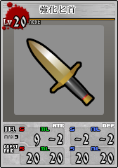
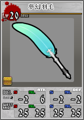

强化武器攻略 | Unlight
目录

依照第一行数值自动变化为匕首/弹药/戒指/手镯/近装/远装/枪剑，仅仅只有外观和名称会发生变化。
合金5：提供 5 经验值，对应PVE数值 + 1 ~ 2 。
魔材6：提供 10 经验值，对应通用数值 - 1 且另外三项随机一项 + 1 。
神圣素材8：提供 5 经验值，对应通用数值 + 1，不能超过第一行合计值上限。
琉璃宝玉9：提供 5 经验值，通用数值合计值上限提升至 3 。
妖精浮雕10：就是狗粮。分别提供 10 / 30 / 100 经验值。
| 近攻 | 远攻 | 近防 | 远防 |
|---|---|---|---|
| 强攻合金 | 突击合金 | 强防合金 | 防护合金 |
| 魔之刀身 | 魔之弹头 | 魔之戒指 | 魔之手镯 |
| 神圣刀身 | 神圣弹头 | 神圣戒指 | 神圣手镯 |

各角色的4专外观和名称都不同
无法退回通武。
将会获得纹章对应角色列表中随机一个角色的4专。（角色对应纹章）
继续与纹章合成则可以重新随机，不会随机到与现在相同的4专。
纹章提供 5 经验值。
数据来源：Google表格
| 角色 | 纹章1 | 纹章2 | 纹章3 |
|---|---|---|---|
| 艾伯李斯特 | 戰神 | 神樹 | |
| 艾依查庫 | 戰神 | 神樹 | |
| 古魯瓦爾多 | 戰神 | 豐收 | |
| 阿貝爾 | 戰神 | 豐收 | |
| 利恩 | 戰神 | 豐收 | |
| 庫勒尼西 | 戰神 | 豐收 | |
| 傑多 | 戰神 | 豐收 | |
| 阿奇波爾多 | 戰神 | 神樹 | |
| 馬庫斯 | 戰神 | 神樹 | |
| 布列依斯 | 戰神 | 神樹 | |
| 雪莉 | 美神 | 豐收 | |
| 艾茵 | 美神 | 豐收 | |
| 伯恩哈德 | 戰神 | 神樹 | |
| 弗雷特里西 | 戰神 | 神樹 | |
| 瑪格莉特 | 美神 | 豐收 | |
| 多妮妲 | 美神 | 豐收 | |
| 史普拉多 | 戰神 | 美神 | 豐收 |
| 貝琳達 | 美神 | 神樹 | |
| 羅索 | 戰神 | 神樹 | |
| 艾妲 | 美神 | 豐收 | |
| 梅倫 | 戰神 | 豐收 | |
| 薩爾卡多 | 戰神 | 神樹 | |
| 蕾格烈芙 | 美神 | 豐收 | |
| 里斯 | 戰神 | 豐收 | |
| 米利安 | 戰神 | 神樹 | |
| 沃肯 | 戰神 | 神樹 | |
| 佛羅倫斯 | 美神 | 豐收 | |
| 帕茉 | 美神 | 豐收 | |
| 阿修羅 | 戰神 | 豐收 | |
| 布朗寧 | 戰神 | 神樹 | |
| 瑪爾瑟斯 | 戰神 | 美神 | 神樹 |
| 路德 | 戰神 | 豐收 | |
| 魯卡 | 戰神 | 神樹 | |
| 史塔夏 | 美神 | 豐收 | |
| 沃蘭德 | 戰神 | 豐收 | |
| C.C. | 美神 | 神樹 | |
| 柯布 | 戰神 | 神樹 | |
| 伊芙琳 | 美神 | 豐收 | |
| 布勞 | 戰神 | 豐收 | |
| 凱倫貝克 | 戰神 | 神樹 | |
| 音音夢 | 美神 | 豐收 | |
| 康拉德 | 戰神 | 神樹 | |
| 碧姬媞 | 美神 | 神樹 | |
| 庫恩 | 戰神 | 神樹 | |
| 夏洛特 | 美神 | 豐收 | |
| 泰瑞爾 | 戰神 | 神樹 | |
| 露緹亞 | 美神 | 豐收 | |
| 威廉 | 戰神 | 神樹 | |
| 梅莉 | 美神 | 豐收 | |
| 古斯塔夫 | 戰神 | 神樹 | |
| 尤莉卡 | 美神 | 神樹 | |
| 林奈烏斯 | 戰神 | 神樹 | |
| 娜汀 | 美神 | 神樹 | |
| 迪諾 | 戰神 | 神樹 | |
| 奧蘭(黑白、棕) | 戰神 | 豐收 | |
| 諾伊庫洛姆 | 美神 | 神樹 | |
| 出葉 | 戰神 | 神樹 | |
| 希拉莉 | 美神 | 豐收 | |
| 克洛維斯 | 戰神 | 神樹 | |
| 艾莉絲泰莉雅 | 美神 | 神樹 | |
| 雨果 | 戰神 | 神樹 | |
| 艾莉亞娜 | 美神 | 神樹 | |
| 格雷高爾 | 戰神 | 豐收 | |
| 蕾塔 | 美神 | 豐收 | |
| 伊普西隆 | 戰神 | 神樹 | |
| 波蕾特 | 美神 | 豐收 | |
| 尤哈尼 | 戰神 | 神樹 | |
| 諾艾菈 | 美神 | 神樹 | |
| 勞爾 | 戰神 | 豐收 | |
| 潔米 | 美神 | 豐收 | |
| 瑟法斯 | 戰神 | 豐收 | |
| 維若妮卡 | 美神 | 神樹 | |
| 里卡多 | 戰神 | 豐收 | |
| 瑪麗妮菈 | 美神 | 豐收 | |
| 摩根 | 戰神 | 神樹 | |
| 茱蒂絲 | 美神 | 神樹 |
| 戰神 | 美神 | 神樹 | 豐收 | 戰神+神樹 | 戰神+豐收 | 美神+神樹 | 美神+豐收 | 戰神+美神 |
|---|---|---|---|---|---|---|---|---|
| 艾伯李斯特 | 雪莉 | 艾伯李斯特 | 古魯瓦爾多 | 艾伯李斯特 | 古魯瓦爾多 | 雪莉 | 貝琳達 | 史普拉多 |
| 艾依查庫 | 艾茵 | 艾依查庫 | 阿貝爾 | 艾依查庫 | 阿貝爾 | 艾茵 | 瑪爾瑟斯 | 瑪爾瑟斯 |
| 古魯瓦爾多 | 瑪格莉特 | 阿奇波爾多 | 利恩 | 阿奇波爾多 | 利恩 | 瑪格莉特 | C.C. | |
| 阿貝爾 | 多妮妲 | 馬庫斯 | 庫勒尼西 | 馬庫斯 | 庫勒尼西 | 多妮妲 | 碧姬媞 | |
| 利恩 | 史普拉多 | 布列依斯 | 傑多 | 布列依斯 | 傑多 | 史普拉多 | 尤莉卡 | |
| 庫勒尼西 | 貝琳達 | 伯恩哈德 | 雪莉 | 伯恩哈德 | 史普拉多 | 艾妲 | 娜汀 | |
| 傑多 | 艾妲 | 弗雷特里西 | 艾茵 | 弗雷特里西 | 梅倫 | 蕾格烈芙 | 諾伊庫洛姆 | |
| 阿奇波爾多 | 蕾格烈芙 | 貝琳達 | 瑪格莉特 | 羅索 | 里斯 | 佛羅倫斯 | 艾莉絲泰莉雅 | |
| 馬庫斯 | 佛羅倫斯 | 羅索 | 多妮妲 | 薩爾卡多 | 阿修羅 | 帕茉 | 艾莉亞娜 | |
| 布列依斯 | 帕茉 | 薩爾卡多 | 史普拉多 | 米利安 | 路德 | 史塔夏 | 諾艾菈 | |
| 伯恩哈德 | 瑪爾瑟斯 | 米利安 | 艾妲 | 沃肯 | 沃蘭德 | 伊芙琳 | 維若妮卡 | |
| 弗雷特里西 | 史塔夏 | 沃肯 | 梅倫 | 布朗寧 | 布勞 | 音音夢 | 茱蒂絲 | |
| 史普拉多 | C.C. | 布朗寧 | 蕾格烈芙 | 瑪爾瑟斯 | 奧蘭(黑白、棕) | 夏洛特 | ||
| 羅索 | 伊芙琳 | 瑪爾瑟斯 | 里斯 | 魯卡 | 格雷高爾 | 露緹亞 | ||
| 梅倫 | 音音夢 | 魯卡 | 佛羅倫斯 | 柯布 | 勞爾 | 梅莉 | ||
| 薩爾卡多 | 碧姬媞 | C.C. | 帕茉 | 凱倫貝克 | 瑟法斯 | 希拉莉 | ||
| 里斯 | 夏洛特 | 柯布 | 阿修羅 | 康拉德 | 里卡多 | 蕾塔 | ||
| 米利安 | 露緹亞 | 凱倫貝克 | 路德 | 庫恩 | 波蕾特 | |||
| 沃肯 | 梅莉 | 康拉德 | 史塔夏 | 泰瑞爾 | 潔咪 | |||
| 阿修羅 | 尤莉卡 | 碧姬媞 | 沃蘭德 | 威廉 | 瑪麗妮菈 | |||
| 布朗寧 | 娜汀 | 庫恩 | 伊芙琳 | 古斯塔夫 | ||||
| 瑪爾瑟斯 | 諾伊庫洛姆 | 泰瑞爾 | 布勞 | 林奈烏斯 | ||||
| 路德 | 希拉莉 | 威廉 | 音音夢 | 迪諾 | ||||
| 魯卡 | 艾莉絲泰莉雅 | 古斯塔夫 | 夏洛特 | 出葉 | ||||
| 沃蘭德 | 艾莉亞娜 | 尤莉卡 | 露緹亞 | 克洛維斯 | ||||
| 柯布 | 蕾塔 | 林奈烏斯 | 梅莉 | 雨果 | ||||
| 布勞 | 波蕾特 | 娜汀 | 奧蘭(黑白、棕) | 伊普西隆 | ||||
| 凱倫貝克 | 諾艾菈 | 迪諾 | 希拉莉 | 尤哈尼 | ||||
| 康拉德 | 潔米 | 諾伊庫洛姆 | 格雷高爾 | 摩根 | ||||
| 庫恩 | 維若妮卡 | 出葉 | 蕾塔 | |||||
| 泰瑞爾 | 瑪麗妮菈 | 克洛維斯 | 波蕾特 | |||||
| 威廉 | 茱蒂絲 | 艾莉絲泰莉雅 | 勞爾 | |||||
| 古斯塔夫 | 雨果 | 潔米 | ||||||
| 林奈烏斯 | 艾莉亞娜 | 瑟法斯 | ||||||
| 迪諾 | 伊普西隆 | 里卡多 | ||||||
| 奧蘭(黑白、棕) | 尤哈尼 | 瑪麗妮菈 | ||||||
| 出葉 | 諾艾菈 | |||||||
| 克洛維斯 | 維若妮卡 | |||||||
| 雨果 | 摩根 | |||||||
| 格雷高爾 | 茱蒂絲 | |||||||
| 伊普西隆 | ||||||||
| 尤哈尼 | ||||||||
| 勞爾 | ||||||||
| 瑟法斯 | ||||||||
| 里卡多 | ||||||||
| 摩根 |
数据来源：Google表格
大多是缓和发动条件（发动需求卡牌数值 - 1，不会导致低于 1）。
本表格未更新Open Unlight平衡调整后的数据。
| 角色 | 技能 | 原条件 | 强化 | 原条件(Ex) | 强化(Ex) |
|---|---|---|---|---|---|
| 艾伯李斯特 | 茨林 + | 特2↑ , 防2↑ | 特1↑ , 防1↑ | 特3↑ , 防3↑ | 特2↑ , 防2↑ |
| 艾依查庫 | 憤怒一擊 + | 特3↑ | 特2↑ | 特3↑ | 特2↑ |
| 古魯瓦爾多 | 血之恩賜 + | 特2↑ , 防3↑ | 特1↑ , 防2↑ | 特2↑ , 防5↑ | 特1↑ , 防4↑ |
| 阿貝爾 | 霸王閃擊 + | 劍3↑ | 劍2↑ | 劍6↑ | 劍5↑ |
| 利恩 | 毒牙 + | 劍3↑ , 特3↑ | 劍2↑ , 特2↑ | 劍5↑ , 特3↑ | 劍4↑ , 特2↑ |
| 庫勒尼西 | 深淵 + | 特3↑ | 特2↑ | 特3↑ | 特2↑ |
| 傑多 | 因果之輪 + | 特2↑ | 特1↑ | 特4↑ | 特3↑ |
| 阿奇波爾多 | 致命槍擊 + | 槍1= , 槍2= , 槍3= | 槍1= , 槍1= , 槍2= | 槍7↑ | 槍6↑ |
| 馬庫斯 | 解放 + | 特4↑ | 特3↑ | 特4↑ | 特3↑ |
| 布列依斯 | 封印枷鎖 + | 劍3↑ , 特3↑ | 劍2↑ , 特2↑ | 劍5↑ , 特3↑ | 劍4↑ , 特2↑ |
| 雪莉 | 異質者 + | 特=3 | 特2= | 特3↑ | 特2↑ |
| 艾茵 | 一顆心 + | 特3= ⇒特3↑ | 特2= ⇒特2↑ | 特3↑ | 特2↑ |
| 伯恩哈德 | 解放劍 + | 劍4↑ | 劍3↑ | 劍5↑ | 劍4↑ |
| 弗雷特里西 | 百閃 + | 劍6↑ , 槍=0 , 移=0 | 劍5↑ , 槍=0 , 移=0 | 劍8↑ , 槍=0 , 移=0 | 劍7↑ , 槍=0 , 移=0 |
| 瑪格莉特 | 恍惚 + | 防3↑ , 移1↑ | 防2↑ , 移1↑ | 防3↑ , 移1↑ | 防2↑ , 移1↑ |
| 多妮妲 | 異質者 + | 特=3 | 特2= | 特3↑ | 特2↑ |
| 史普拉多 | 貪食者 + | 劍4↑移1↑ | 劍3↑移1↑ | 劍5↑移1↑ | 劍4↑移1↑ |
| 貝琳達 | 裂地冰牙 + | 槍4↑ , 特1↑ | 槍3↑ , 特1↑ | 槍4↑ , 特1↑ | 槍3↑ , 特1↑ |
| 羅索 | 時空分斷刀 + | 劍6↑ | 劍5↑ | 劍6↑ | 劍5↑ |
| 艾妲 | 機槍掃射 + | 槍3↑⇒槍4↑ | 槍2↑⇒槍3↑ | 槍5↑ | 槍4↑ |
| 梅倫 | Lowball + | 劍1↑ , 槍1↑ , 特1↑ , 防1↑ , 移1↑ | 劍1↑ , 槍1↑ , 特1↑ , 移1↑ | 劍1↑ , 槍1↑ , 特1↑ , 防1↑ , 移1↑ | 劍1↑ , 槍1↑ , 特1↑ , 移1↑ |
| 薩爾卡多 | 迴飛踢 + | 劍3↑ , 槍3↑ | 劍2↑ , 槍2↑ | 劍3↑ , 槍3↑ | 劍2↑ , 槍2↑ |
| 蕾格烈芙 | C.T.L + | 槍4↑ , 特1↑ | 槍3↑ , 特1↑ | 槍6↑ , 特1↑ | 槍5↑ , 特1↑ |
| 里斯 | 煉獄 + | 劍5↑ , 特2↑ | 劍4↑ , 特1↑ | 劍6↑ , 特2↑ | 劍5↑ , 特1↑ |
| 米利安 | 漆黑迅雷 + | 槍4↑ , 特1↑ | 槍3↑ , 特1↑ | 槍5↑ , 特1↑ | 槍4↑ , 特1↑ |
| 沃肯 | 自我解剖 + | 特2↑ | 特1↑ | 特3↑ | 特2↑ |
| 佛羅倫斯 | 戰鬥巨斧 + | 劍5↑ | 劍4↑ | 劍6↑ | 劍5↑ |
| 帕茉 | 慈悲的藍眼 + | 劍7↑ ⇒劍6↑ | 劍6↑ ⇒劍5↑ | 劍5↑ | 劍4↑ |
| 阿修羅 | 葉隱術 + | 特2↑ , 防2↑ | 特1↑ , 防1↑ | 特2↑ , 防2↑ | 特1↑ , 防1↑ |
| 布朗寧 | 羅德西亞之海 + | 特2↑ , 防3↑ | 特1↑ , 防2↑ | 特2↑ , 防3↑ | 特1↑ , 防2↑ |
| 瑪爾瑟斯 | 蒼藍薔薇 + | 劍6↑ , 防5↑ ⇒劍5↑ , 防5↑ | 劍5↑ , 防4↑ ⇒劍4↑ , 防4↑ | 劍5↑ , 防4↑ | 劍4↑ , 防3↑ |
| 路德 | 洋地黃 + | 劍3↑ , 槍3↑ | 劍2↑ , 槍2↑ | 劍3↑ , 槍3↑ | 劍2↑ , 槍2↑ |
| 魯卡 | 八葉 + | 特2↑ | 特1↑ | 特2↑ | 特1↑ |
| 史塔夏 | 愚者之手 + | 劍5↑ ⇒劍6↑ | 劍4↑ ⇒劍5↑ | 劍6↑ | 劍5↑ |
| 沃蘭德 | 『審判』 + | 防2↑ , 特2↑ | 防1↑ , 特1↑ | 防3↑ , 特2↑ | 防2↑ , 特1↑ |
| C.C. | 白銀戰機 + | 劍2↑ , 槍2↑ | 劍1↑ , 槍1↑ | 劍3↑ , 槍3↑ | 劍2↑ , 槍2↑ |
| 柯布 | 異空僵局 + | 防3↑ , 移1↑ | 防2↑ , 移1↑ | 防4↑ , 移1↑ | 防3↑ , 移1↑ |
| 伊芙琳 | 慟哭之歌 + | 特1↑ , 防3↑ | 特1↑ , 防2↑ | 特1↑ , 防3↑ | 特1↑ , 防2↑ |
| 布勞 | 時間爆彈 + | 劍3↑ , 槍3↑ | 劍2↑ , 槍2↑ | ||
| 凱倫貝克 | 自棄的奏鳴曲 + | 特1↑ , 移1↑ | 特1↑ | 特1↑ , 移1↑ | 特1↑ |
| 音音夢 | 愉快抽血 + | 特2↑ | 特1↑ | ||
| 康拉德 | 祝善之意 + | 防2↑ , 移1↑ | 防1↑ , 移1↑ | ||
| 碧姬媞 | 轉生輪迴 + | 劍3↑ , 槍3↑ | 劍2↑ , 槍2↑ | ||
| 庫恩 | 懶惰的呻吟 + | 槍3↑ , 特1↑ | 槍2↑ , 特1↑ | 槍4↑ , 特1↑ | 槍3↑ , 特1↑ |
| 夏洛特 | 冬之夢 + | 劍3↑ , 槍3↑ | 劍2↑ , 槍2↑ | 劍3↑ , 槍3↑ | 劍2↑ , 槍2↑ |
| 泰瑞爾 | Rud-913 + | 劍3↑ , 移1↑ | 劍2↑ , 移1↑ | 劍4↑ , 移1↑ | 劍3↑ , 移1↑ |
| 露緹亞 | 腐朽之靈 + | 劍3↑ | 劍2↑ | 劍4↑ | 劍3↑ |
| 威廉 | 魂魄的奉禮 + | 劍3↑ , 槍3↑ , 特2↑ | 劍2↑ , 槍2↑ , 特1↑ | ||
| 梅莉 | 夢幻魔杖 + | 槍3↑ | 槍2↑ | 槍3↑ | 槍2↑ |
| 古斯塔夫 | 鮮明的邪光 + | 劍3↑ , 槍1↑ | 劍2↑ , 槍1↑ | 劍4↑ , 槍1↑ | 劍3↑ , 槍1↑ |
| 尤莉卡 | 曲惡的安寧 + | 特1↑ , 防3↑ | 特1↑ , 防2↑ | ||
| 林奈烏斯 | 蝶舞 + | 移1↑ , [劍防槍]3↑ | 移1↑ , [劍防槍]2↑ | ||
| 娜汀 | 抱擁結界 + | 特1↑ , 槍4↓ ⇒ 特1↑ , 槍5↓ | 特1↑ , 槍5↓ ⇒ 特1↑ , 槍6↓ | ||
| 迪諾 | 你是在看哪裡！ + | 移=1 , 特=1 | 特=1 | ||
| 奧蘭 | 彈鋼琴 + | 劍1↑ , 防3↑ | 劍1↑ , 防2↑ | ||
| 諾伊庫洛姆 | 萬物之杖 + | 槍3↑ , 特4↓ ⇒ 槍3↑ , 特5↓ | 槍2↑ , 特5↓ ⇒ 槍2↑ , 特6↓ | ||
| 出葉 | 銳水流槍 + | 槍3↑ , 移1↑ | 槍2↑ , 移1↑ | ||
| 希拉莉 | 報復回擊 + | 劍3↑ , 槍2↑ | 劍2↑ , 槍1↑ | ||
| 克洛維斯 | 幻惑的一幕 + | 防4↑ , 無1↑ | 防3↑ , 無1↑ | ||
| 艾莉絲泰莉雅 | 陷落常春藤 + | 劍3↑ , 槍3↑ | 劍2↑ , 槍2↑ | ||
| 雨果 | 縫影 + | 特2↑ | 特1↑ | ||
| 艾莉亞娜 | 恐懼的法則 + | 特3↑ | 特2↑ | ||
| 格雷高爾 | 靈魂仿製 + | 槍2↑ , 防2↑ | 槍1↑ , 防1↑ | ||
| 蕾塔 | 逆襲引力 + | 防1↑ , 移2↑ | 防1↑ , 移1↑ | ||
| 伊普西隆 | 次元交錯 + | 防3↑⇒防4↑ | 防2↑⇒防3↑ | ||
| 波蕾特 | 紫色狂躁 + | 槍4↑ , 防2↑ | 槍3↑ , 防1↑ | ||
| 尤哈尼 | 拒絕餘光 + | 劍2↑ , 槍2↑ , 防2↑ | 劍1↑ , 槍1↑ , 防1↑ | ||
| 諾艾菈 | 強襲彗星 + | 槍=3 | 槍=2 | ||
| 勞爾 | 恐慌榴彈 + | 槍3↑ , 移1↑ | 槍2↑ , 移1↑ | ||
| 潔米 | 瑪基斯托 + | 槍3↑ | 槍2↑ | ||
| 瑟法斯 | 勇猛的儀式 + | 劍4↑ | 劍3↑ | ||
| 維若妮卡 | 人偶幻視 + | 防3↑ , 特2↑ | 防2↑ , 特1↑ | ||
| 里卡多 | 威勢 + | 防4↑ ⇒防3↑ | 防3↑ ⇒防2↑ | ||
| 瑪麗妮菈 | 快速射擊 + | 槍4↑ | 槍3↑ | ||
| 摩根 | 銳化篡奪 + | 防3↑ , 移1↑ | 防2↑ , 移1↑ | ||
| 茱蒂絲 | 牲祭納一 + | 防=2 | 防=1 |